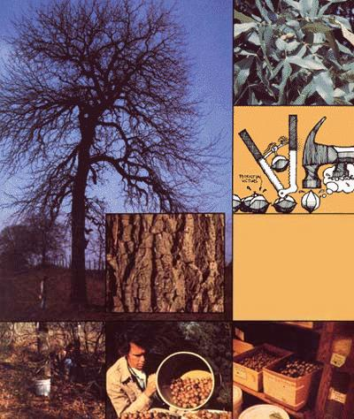

LEFT: The shagbark hickory and (inset) a close-up of the reason it has that name. ABOVE: Hickory leaves and immature nuts as they appear during the summer... and illustrations of the proper way to crack the hulled, hard-shelled goodies. BELOW, LEFT TO RIGHT: A good forager under a good tree can gather 20 pounds of hulled hickory nuts in an hour... this solemn fellow is obviously a good forager... and unshelled nuts ""on sale"" in a natural foods store.